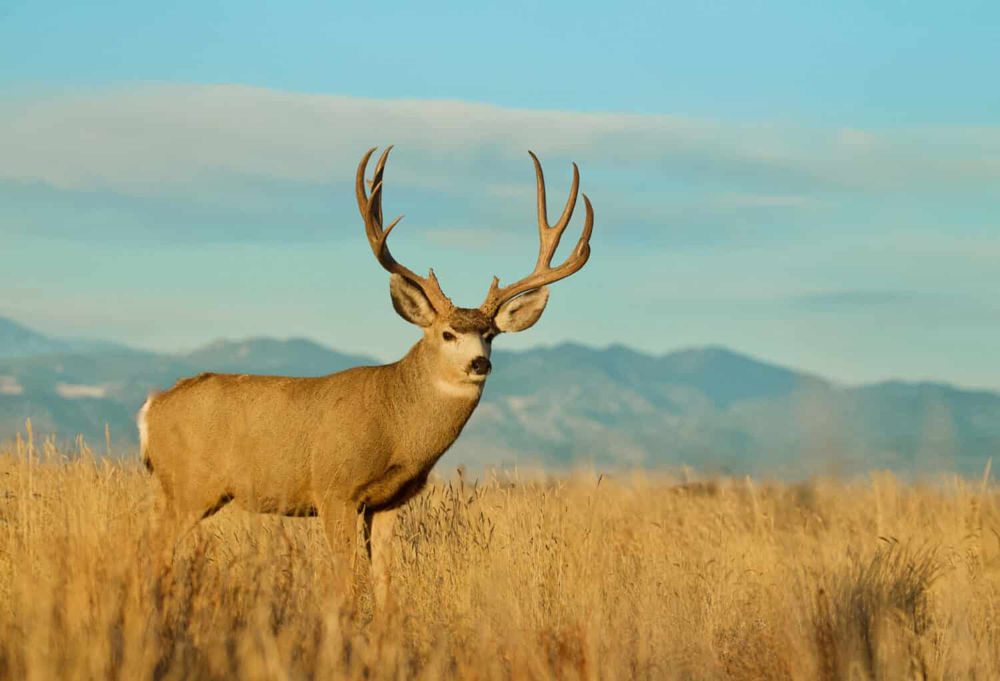
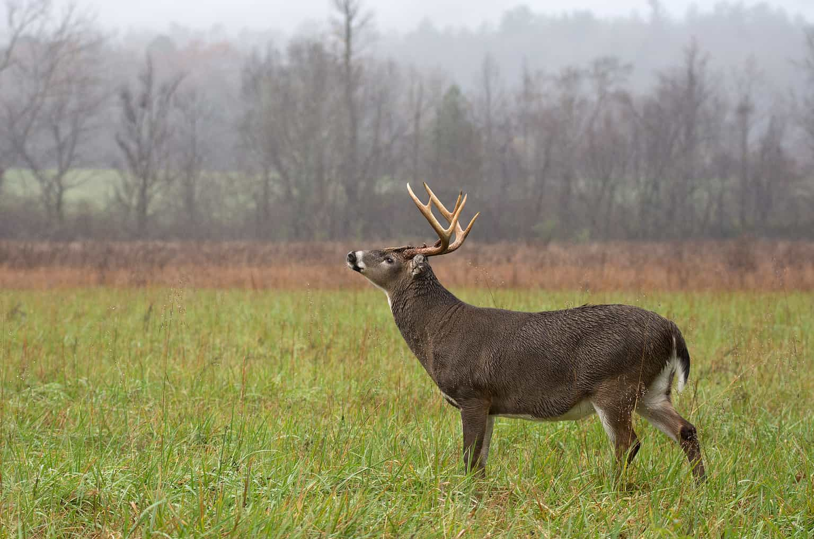
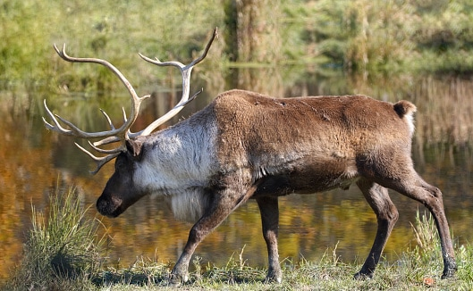
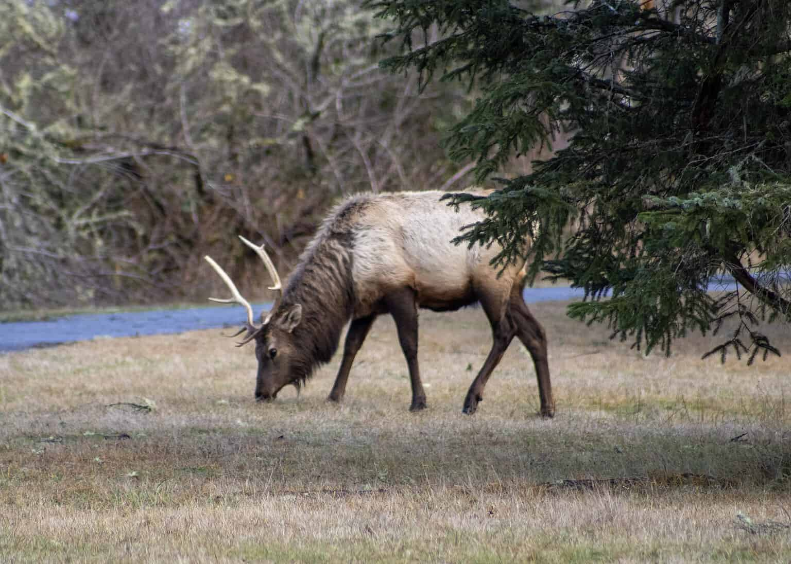
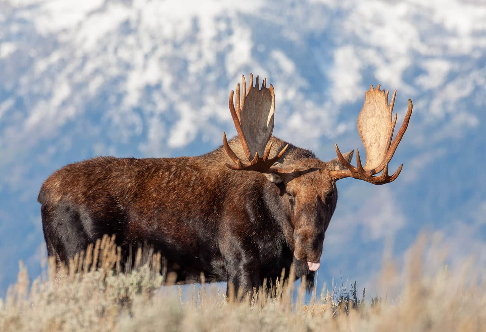

Deer, those enchanting creatures from the Cervidae family, possess an incredible array of adaptations and characteristics that make them unique among hoofed mammals. With approximately 30 diverse species inhabiting regions such as North America, South America, northern Africa, Asia, and Australia, their presence has been introduced to new territories, like New Zealand and Australia. These graceful beings, known for their slender legs, short tails, and large ears, usually wear a smooth, brown fur, adorned with the occasional white patch on their throats and chests. However, when winter's icy grip tightens, some don a shaggy coat for added warmth. From the diminutive South American pudu, standing at a mere 12 inches, to the colossal moose towering over 7 feet, deer exhibit an impressive range in size.
Despite their elegance, all deer share one common trait – their herbivorous nature, subsisting on a diet of plants, including twigs, bark, and grass. While they typically thrive in family groups, the males occasionally embark on solitary journeys. These magnificent creatures are truly emblematic of nature's diversity.
⇨ Mule Deer

Mule deer, aptly named for their mule-like ears, are desert survivors. Their brownish-gray coats, adorned with a small white tail, give way to the magnificent antlers that grace the males in summer, only to be shed in spring. These antlers branch into a captivating split, forming two or more tines.
Inhabitants of the desert, mule deer have mastered the art of survival, primarily active during the cooler early morning and evening hours. Their adaptable palates allow them to thrive on an assortment of vegetation, as long as there's enough to graze upon and hide within. These intelligent creatures migrate to higher elevations during summer's swelter and descend to lower altitudes in the winter, often finding solace in the sheltered embrace of wooded hills and forests.
Wandering through the western United States, mule deer are guardians of the land, aided by the conservation efforts of many states. Their diet reads like a culinary adventure, encompassing mesquite leaves and beans, fairy duster, grasses, shrubs, and more.
Despite their stature, mule deer are not without their adversaries, from bobcats, wolves, bears, eagles, and mountain lions to the ever-present threat of humans. Their lifespan in the wild ranges from 9 to 11 years, while those in captivity may revel in even more extended years.
⇨ White-Tailed Deer

White-tailed deer, though the smallest North American deer, stand tall in the forests, with the ability to weigh between 110 and 300 pounds. They transition from chestnut coats in summer to a more subdued gray hue in colder seasons, with male bucks flaunting impressive antlers that shed in winter.
Distinguished by the striking white underside of their tails, which becomes visible when they wag them, these deer prefer open woodlands, occasionally venturing to the fringes of urban territories and farms. Their habitats range from streamside havens to mixed woodlands, farms, forests, and scorched shrub fields.
Their flexible diet ranges from shrub buds and twigs to various tree species like birch, aspen, poplar, sassafras, and maple, while scarce winter offerings may lead them to conifers. These agile creatures can reach speeds of up to 30 miles per hour.
Mothers exhibit fierce protection for their fawns, even as they momentarily leave them to forage for food. White-tailed deer are typically solitary creatures, with the male antlers serving as tools of competition during mating seasons, ultimately shed from January to March.
⇨ Reindeer (Caribou)

Reindeer, often referred to as caribou, belong to the deer family and exhibit unique traits such as both males and females growing antlers. Thriving in Asia, Europe, and the far reaches of North America's northern expanses, they conquer diverse habitats, from dense forests to treeless Arctic tundra.
With sturdier builds and shorter legs than their deer relatives, reindeer can tip the scales at an impressive 700 pounds, boasting coats of brown, white, or gray. These communal animals graze on plants, grasses, and the esteemed reindeer moss, displaying their agility during fall breeding seasons.
Males engage in spirited battles for the affections of mates, while females typically give birth to a single offspring. Human societies, like the Sami of northern Europe, have cultivated herds of reindeer for tasks ranging from sled-pulling to utilizing their skins, milk, and meat.
⇨ Elk (Wapiti)

Elk, the grandest of the red deer subspecies, are known as wapiti, hailing from Central Asia's lofty mountains and North American terrain. Their name, "elk," traces its origins to the ancient Germanic word for "hart" or "stag." It's important to note that in Europe, moose bears the title of "elk."
Thriving across North America, from Canada's Yukon to Mexico's north, and spanning from Vancouver Island to Pennsylvania, elk exhibit a penchant for prairies, swampy valleys, deciduous forests, and rainforests. Their robust presence occasionally tips the scales at a remarkable 1,100 pounds, with size variations between populations.
These herbivores are at their most active during the early morning and late evening, savoring small plants, fresh tree and shrub growth, and luscious grasses. Flocking together in sizable groups, they fend off predators such as coyotes, bears, and wolves. The haunting bugle of male elk, though rarely echoed by females, announces their presence.
Female elk, carrying a gestation period of 255 days, give birth to a single, white-spotted calf in the early summer.
⇨ Moose

Moose, the colossus of the deer family, grace the forests of the United States, particularly in the Rocky Mountain region, Alaska, and Canada. Although called "elk" in Europe, these majestic creatures prefer to dwell near lakes, ponds, and riverbanks.
Long-legged and robust, a fully grown male moose can weigh up to a staggering 1,400 pounds, donning thick, dark brown fur, occasionally taking on a near-black or reddish tint. Only the male moose have the privilege of growing antlers that can exceed 5 feet in width, shedding them annually.
Mastering the art of survival, moose demonstrate their versatile diets, including water plants like lilies and pondweed, bark, twigs, herbs, and grasses. Noteworthy swimmers, they navigate watery domains with ease. Their acute hearing compensates for their limited sight.
As we conclude our exploration of these magnificent creatures, we're reminded of the captivating diversity of the deer family. From the delicate white-tailed deer to the resilient mule deer, the nomadic reindeer, the grand elk, and the colossal moose, each species brings its own unique charm to the natural world. Their tales of adaptation, survival, and beauty are a testament to the wonders of the animal kingdom. We hope this journey through the lives of these remarkable deer has left you with a newfound appreciation for the enchanting world of the Cervidae family. Remember, every forest, meadow, and wilderness has its own story to tell, and the deer are often the silent, yet profound, narrators of these tales.